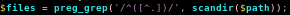
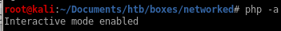
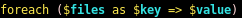

Index
scandir
lets see exactly what scandir does using our own environment

we see it scans the directory its in!

now looking at check_attack.php

we see we have control of the $value parameter since we can upload files to our victim, we just need to name the file something malicious and it will get executed by php exec without any sanitation!
exec can run multiple commands on one line if separated by a semi-colon so lets use that to our advantage here and get a little creative
if we separate $path and $value with a semicolon ‘;’ we can write malicious code after it